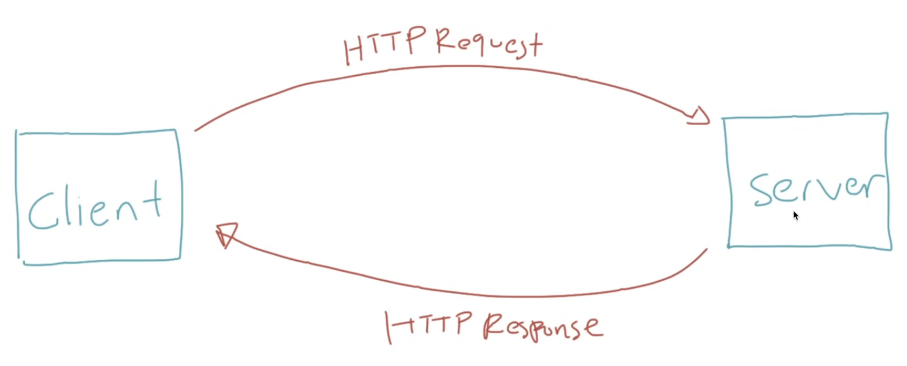

Pengenalan HTTP
- HTTP singkatan dari Hypertext Transfer Protocol
- HTTP merupakan protokol untuk melakukan trasmisi hypermedia document, seperti HTML, CSS, JavaScript, Image, Audio, Video dan lain-lain
- HTTP awalnya di desain untuk komunikasi antara Web Browser dan Web Server, namun saat ini sering juga digunakan untuk kebutuhan lain
Client Server
- HTTP mengikuti arsitektur client dan server
- Client mengirimkan HTTP Request untuk meminta atau mengirimkan informasi ke server
- Dan server membalasnya dengan HTTP Response dari HTTP Request yang diterima

Plain Language and Human Readable
HTTP di desain menggunakan bahasa yang mudah di mengerti oleh bahasa manusia, seperti:
- GET
- POST
- PUT
- DELETE
- HEAD
- OPTION
Stateless
- HTTP merupakan protokol yang stateless
- Artinya tiap HTTP Request merupakan request yang independen, tidak ada keterkaitan atau hubungan dengan HTTP Request sebelum atau setelahnya
- Hal ini dilakukan agar HTTP Request secara bebas tanpa ada aturan harus dimulai dari mana
Session
- Jika HTTP merupakan protokol yang stateless, bagaimana dengan session? Misal client harus login dulu sebelum berinteraksi
- Untuk menangani permasalahan seperti ini, HTTP memiliki fitur yang bernama HTTP Cookie
- HTTP Cookie memaksa client menyimpan informasi yang diberikan oleh server
Back ||
Next